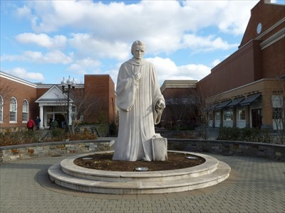
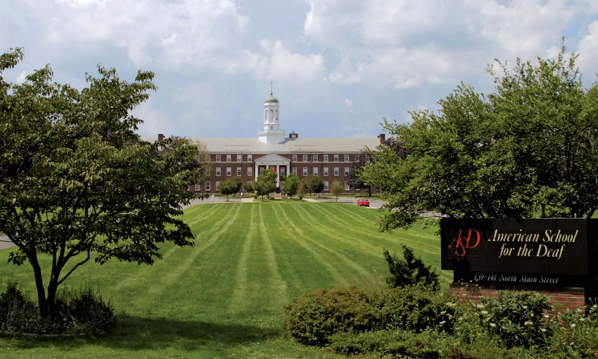

Noah Webster Statue
The Noah Webster Statue is a landmark in West Hartford, located right near the townhall in the center of town. It is a testament to a great figure of West Hartford and its surrounding area. Webster was a lexicographer who wrote both the 'American Spelling Book' and the 'American Dictionary of the English Language'. His writings are still around today in West Hartford schools as well as many other places in the surrounding areas.
American School for the Deaf
This school, founded in 1817, was the first permanent school for deaf and hard of hearing students in the US. It is a large part of the community, such as competing with the surrounding High Schools in athletics.
